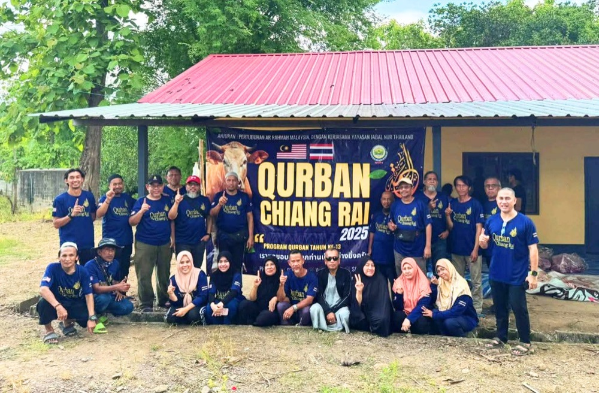
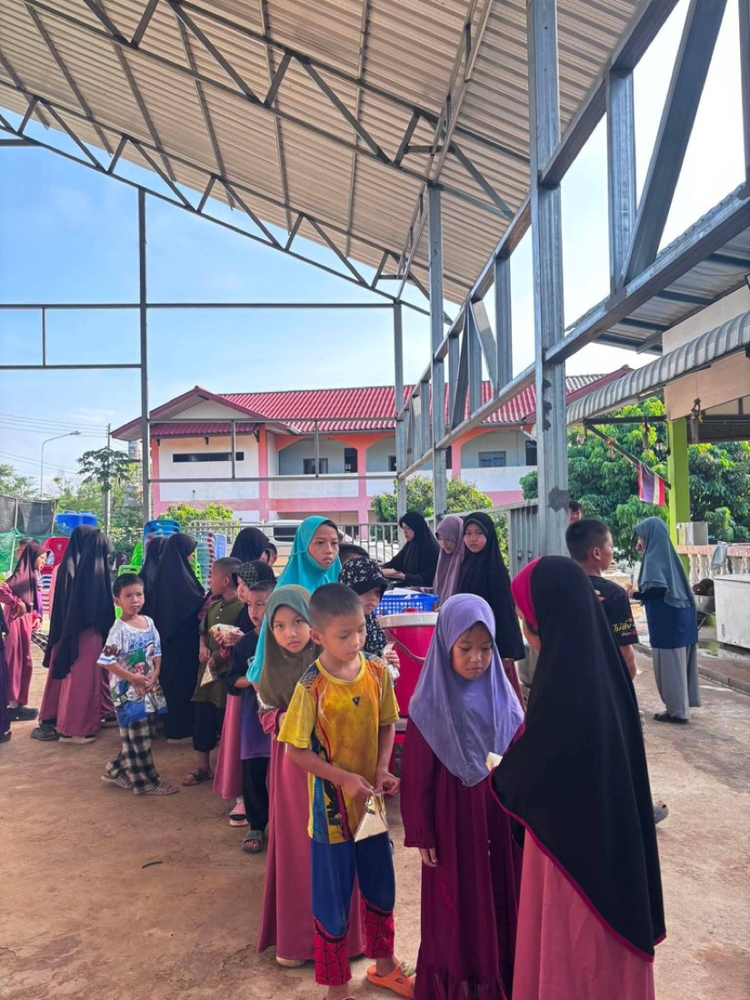
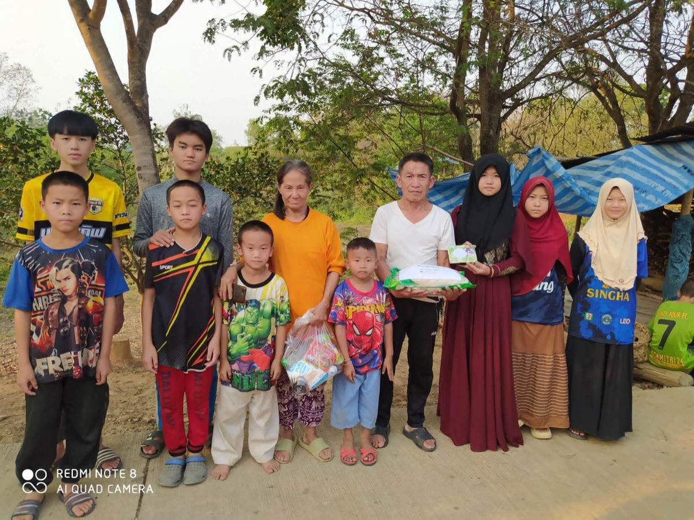
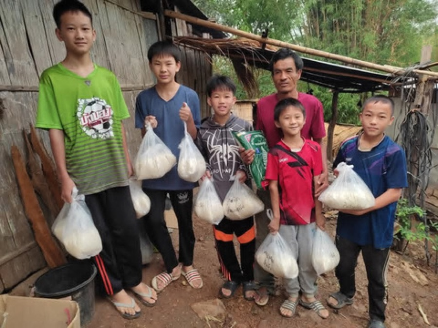
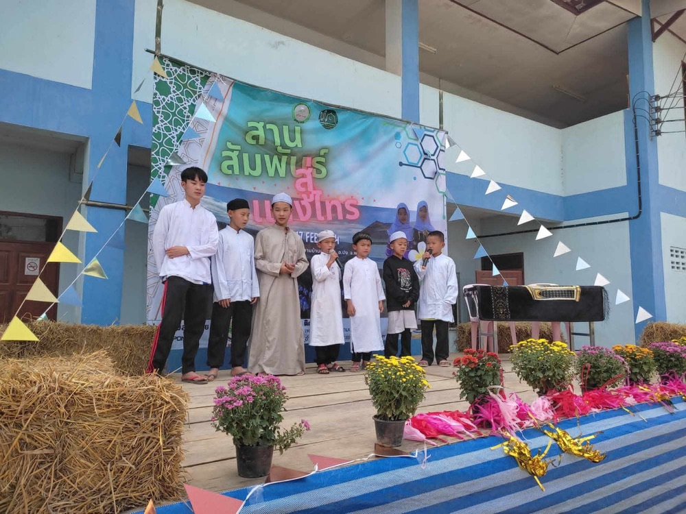

Program Qurban Chiang Rai 2025
Program korban tahunan yang dijalankan sejak 2013 bersama sukarelawan dari Malaysia.

Building future Muslim generations in Northern Thailand
Kami menjaga, mendidik dan membimbing anak-anak mualaf dari komuniti 'Orang Bukit' di Phayao dan Chiang Rai, seawal usia 7 tahun.
Sehingga Mei 2026. Admin boleh kemas kini angka ini dari CMS.
Tentang kami
Usaha ini dimulakan oleh Almarhum Ustaz Abdul Wahab Ahmad bersama para pendakwah tempatan di wilayah Phayao dan Chiang Rai. Pertubuhan Ar Rahmah Malaysia ditubuhkan untuk meneruskan perjuangan itu, dengan pendidikan yang tersusun untuk anak-anak mualaf supaya saudara baharu tidak kembali mundur.
Visi: melahirkan generasi Muslim mualaf yang berilmu, berakhlak mulia dan mampu membina komuniti Islam yang kukuh serta berdikari dalam tempoh 20 tahun.

"Kami percaya bahawa setiap anak mualaf yang dibimbing hari ini mampu menjadi pemimpin, pendidik dan pembina ummah pada masa hadapan."Amir Hamzah bin Abdul HashimPengerusi
Model pembangunan
Perjalanan seorang anak, dari belum mengenal Islam hingga menjadi pembina ummah.
Tiga teras utama

01
Menggabungkan ilmu akademik dan pendidikan Islam, bermula seawal usia 7 tahun.

02
Memperkenalkan Islam dan mengukuhkan kefahaman agama dalam komuniti pedalaman, dengan hikmah dan kasih sayang.

03
Membantu keperluan asas supaya mereka dapat fokus belajar dan beribadah.
Islamic Centre
Tiga pusat di Utara Thailand menjaga pelajar sekolah rendah. Pusat di Saiburi, Pattani menyambung pelajar ke peringkat menengah dan universiti.
Kami juga menjalankan program di Malaysia, termasuk program khatan tahunan di Sabah.
| Pusat | Pelajar |
|---|---|
| Phayao Islamic Centre | 60 |
| Pangsa Islamic Centre | 60 |
| Wiang Mok Islamic Centre | 30 |
| Islamic Centre Saiburi Menengah & universiti | 40 |
Ketelusan kewangan
Merangkumi keperluan asas pelajar, makan minum, gaji kakitangan, utiliti, penyelenggaraan premis dan pengangkutan.
Admin muat naik laporan setiap 3 bulan dari CMS.
Jaminan ketelusan
Setiap 3 bulan.
Setiap 3 bulan.
Penyumbang boleh melawat pusat di Utara atau Selatan Thailand.
Secara jemputan atau atas talian.
AJK, penasihat atau badan seperti MAIPs dan ROS.
Aktiviti terkini di Facebook dan TikTok.
Berita & aktiviti

Program korban tahunan yang dijalankan sejak 2013 bersama sukarelawan dari Malaysia.

Barang keperluan asas diagihkan kepada keluarga pelajar di kampung pedalaman.

Pelajar Islamic Centre tampil di hadapan masyarakat setempat.
Berita di atas ialah contoh susun atur. Admin tambah berita dan gambar sendiri dari CMS.
Sumbang
Bukan semua orang boleh turun ke lapangan dakwah, tetapi semua orang boleh menjadi sebab hidayah sampai kepada manusia.
Tertakluk kepada polisi dan kelulusan institusi zakat berkaitan.
Maybank · Pertubuhan Ar Rahmah Malaysia
5520 3110 4857
Fasa 2 (pilihan): bayaran FPX / kad terus di laman ini.
Sertai Majlis Penaung Ar Rahmah melalui program Penaung Dakwah, dengan laporan setiap suku tahun.
Lihat program Penaung Dakwah"Demi Allah, sekiranya Allah memberi hidayah kepada seorang sahaja melalui kamu, maka itu lebih baik bagimu daripada (memiliki) unta merah."
HR al-Bukhari